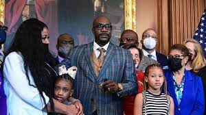

Geodge Floyd is a black American that grew up in America for over 40years and got married as well
Below is his family photo
By Alicia Victoria Lozano
Wearing a striped headband adorned with a large bow, George Floyd's 7-year-old daughter delivered an emotional message Friday afternoon via video during victim impact statements preceding the sentencing of Derek Chauvin, the former Minneapolis police officer convicted of murdering Floyd last year. “I ask about him all the time,” Gianna Floyd said of her father. “I ask ‘How did my dad get hurt?” Gianna was the first of four family members who addressed Hennepin County District Judge Peter Cahill prior to the sentencing. Chauvin was sentenced to 22 and a half years.
Gianna was the first of four family members who addressed Hennepin County District Judge Peter Cahill prior to the sentencing. Chauvin was sentenced to 22 and a half years.
When heard consecutively, the statements including those of Floyd’s two brothers and a nephew, painted a clear picture of a family torn apart by trauma and grief, forced to relive the very public murder of their loved one over and over again.
“We used to have dinner meals every single night before we went to bed,” Gianna said in her video, before adding that she misses brushing her teeth with her dad’s help.
When asked what she would tell her father if she could see him again, she simply answered: “I miss you and I love him.”
In his statement, Floyd’s nephew Brandon Williams said it is not “humanly possible” for him to convey the full weight of his family’s loss. Floyd’s “sudden murder forever traumatized us,” he told the court.